Create a Profile
This page describes the procedures for adding and editing Profiles.
You can choose whether to adjust facial expressions based on Maya or FCS,
but we recommend using “Both” to start with.
Importing analysis videos
Before creating a Profile, first load the videos you will use into FCS.
In the Videos window, you can open or import the videos you want to analyze.
|
Window → Videos |

Note
For details on the Videos window, see User Guide/Menu/Window/Videos.
1. Press [Import] to open a popup window,
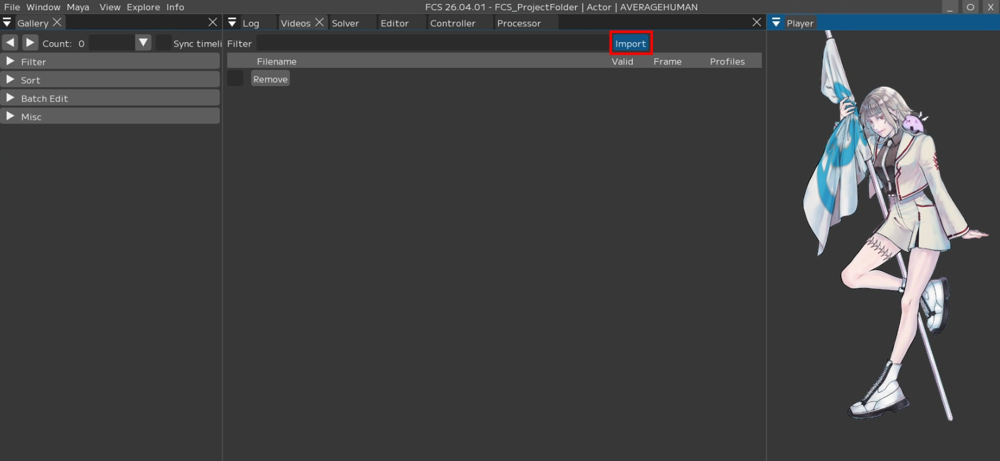
2. Click the video you want to analyze.
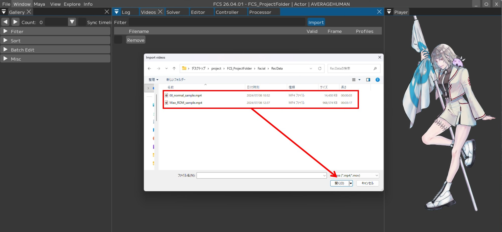
Note
You can import multiple videos at once by Shift+clicking.
3. The [Select Video Rotate] window opens, so press [Comfirm].
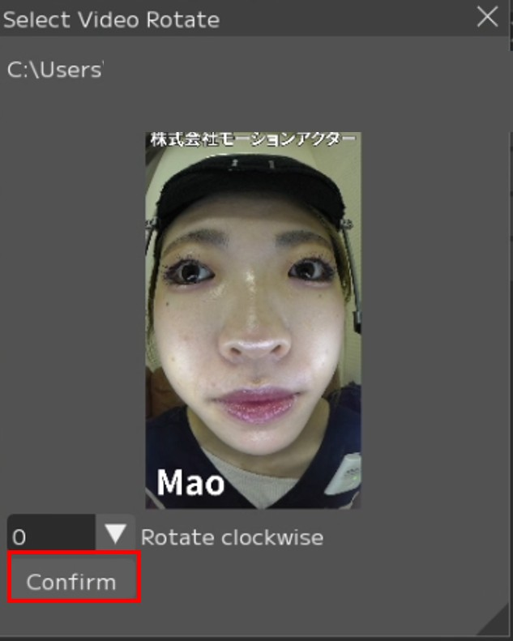
Note
During import, you can rotate the video clockwise using the number in the lower left.
4. The imported video will be displayed in the Videos window.
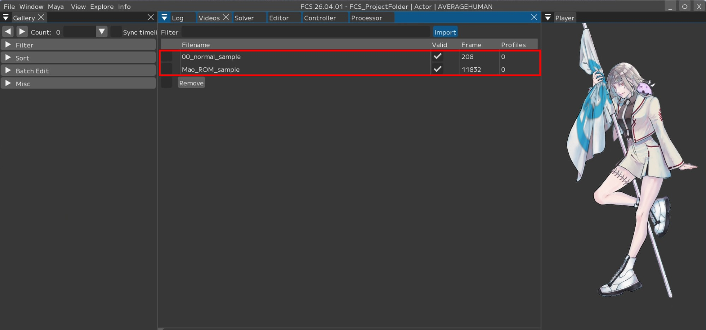
About Profiles
Adding Profiles with various expressions improves analysis accuracy.
However, simply having a large number is not enough – if controller values differ for Profiles with similar expressions, it will create noise, so caution is needed.
Additionally, it is recommended to create at least one Profile per video to be analyzed.
Note
In addition to Profiles for each video to be analyzed, it is recommended to create approximately 50 Profiles called ROM exercises.
For the facial expressions used in ROM exercises, please refer to the PDF file included with the starter kit.
Opening imported videos in FCS
Right-click on the video file you want to open and select [Open], or double-click it.
The video will be displayed on the VideoPlayer.
Right-click on the video file name -> [Open]
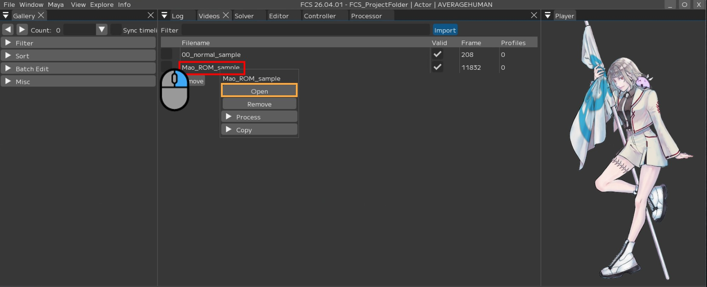

How to add a Profile
Move the slider in the VideoTimeline window and stop at the frame where you want to register the expression.
Press [+] to add the image of the specified frame to the Gallery and open the Editor.
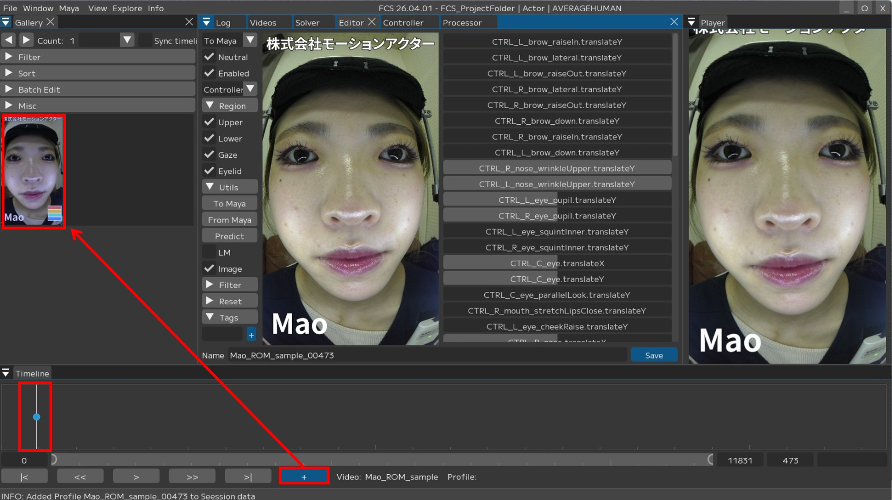
About the frame borders when a Profile is added
Red: Profile with default values / unedited
Green: Profile registered with “Neutral” checked
Blue: Currently selected (being edited) Profile
Black: Profile registered as “Disabled” by unchecking “Enabled”
White: Profile registered after retargeting
Registering a Neutral expression
A Neutral expression is a natural expression where the actor’s facial muscles are relaxed.
Be sure to set one Neutral expression per session.
Check Neutral
Change to a desired name
Save
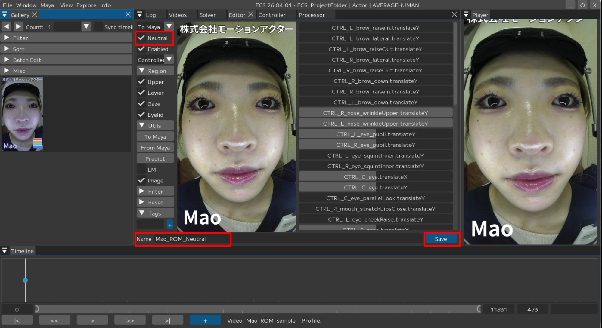
Note
It is not always necessary to change the Profile name.
Adjusting expressions in Maya
1. Move the slider in the VideoTimeline window and stop at the frame where you want to register the expression.
Press [+] to add the image of the specified frame to the Gallery and open the Editor.
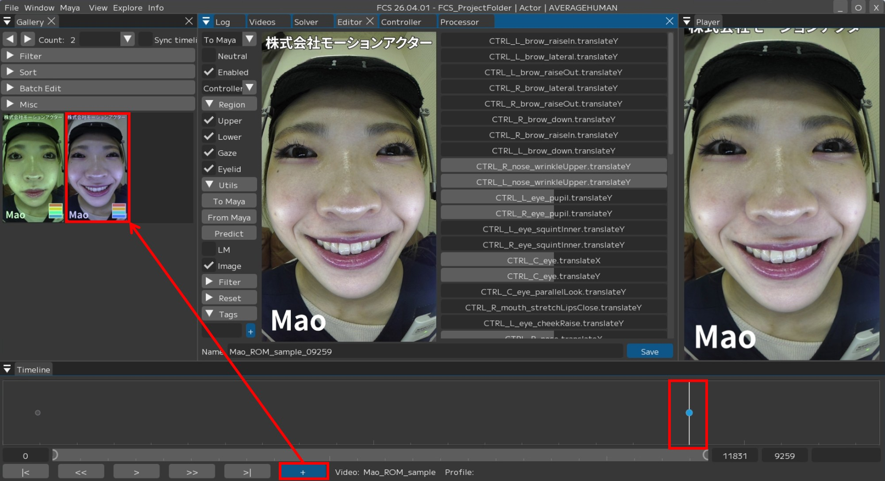
2. Confirm that the image added to the Gallery matches the image in the Editor screen.
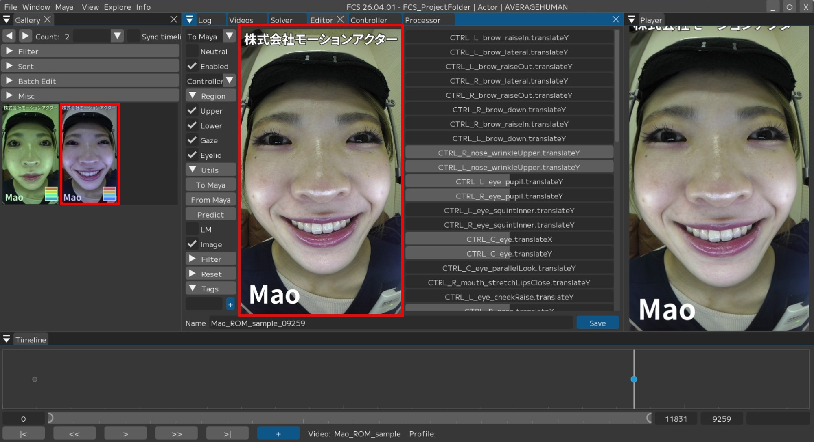
3. Adjust the character’s expression using Maya’s controller rigs to match the added actor’s expression.
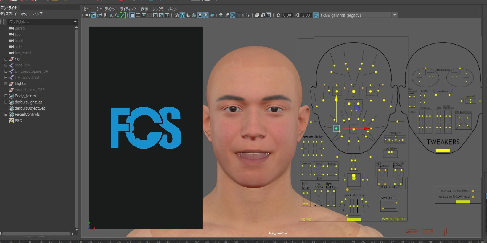
4. Click [From Maya] to apply the adjustment information from Maya to FCS.

Note
If the [To Maya] pull-down is set to “From Maya at save” or “Both”, the adjusted values will be automatically synchronized.
Note
If you forgot to register a controller, the expression may differ when you reopen it.
In that case, register the missing controller and re-register the Profile.
5. Change the Name to a desired name and press [Save].
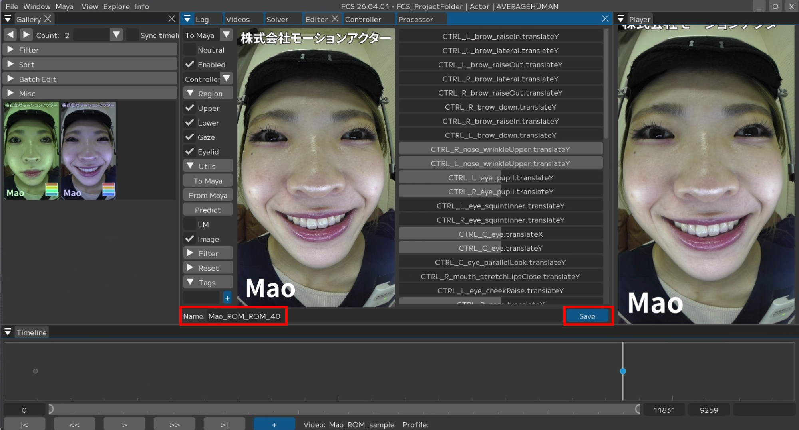
Adjusting expressions in FCS
1. Move the slider in the VideoTimeline window and stop at the frame where you want to register the expression.
Press [+] to add the image of the specified frame to the Gallery and open the Editor.
2. Confirm that the image added to the Gallery matches the image in the Editor screen.
If Sync is set to No Sync, automatic information sharing for Profiles is not performed, so Maya will still display the previously registered expression.

Note
Reopening with Sync set to “Both” will reset to the default expression.
Skip this if already done.
3. Adjust the character’s expression using [Controller] in the Editor to match the added actor’s expression.
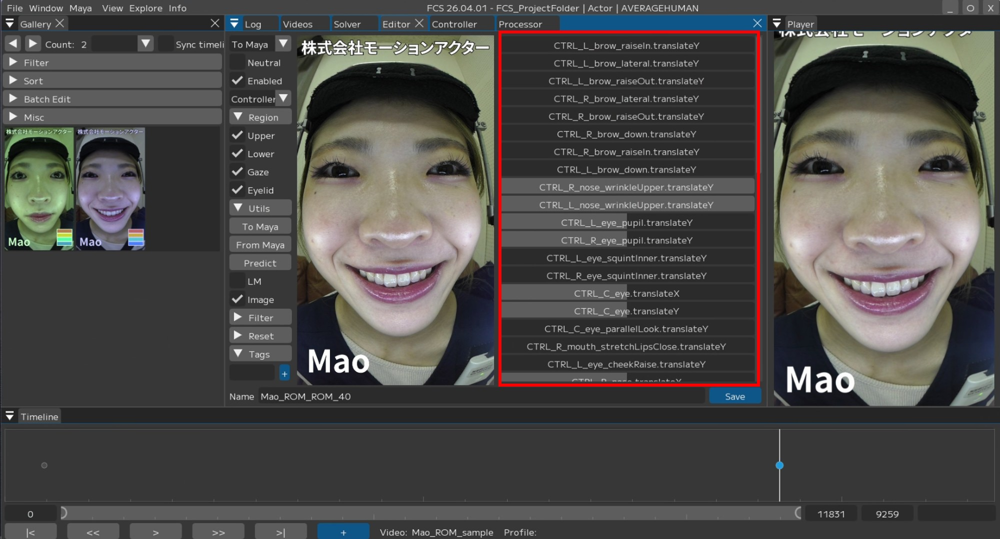
Note
|
You can narrow down the |

{kind=link}
{kind=link}
{kind=link}
{kind=link}
{kind=link}
{kind=link}
{kind=link}
{kind=link}
{kind=link}
{kind=link}
{kind=link}
{kind=link}
4. Click [To Maya].

Note
If the Sync pull-down is set to “To Maya” or “Both”, the adjusted values will be automatically synchronized.
5. The adjustments made in FCS will be reflected in Maya.
Profile Tag Feature
You can assign “tags” to Profiles when creating them.
This feature allows you to efficiently manage Profiles registered in the Gallery and smoothly switch between expressions used for analysis.
1. Open [Tags] in the Editor window and enter the tag name in the text box.
Press [+] to add the tag.

2. Check Advanced in the Gallery window to display the following items.

Note
Filter: Configure filtering for displayed Profiles.
sort: Change the display order of Profiles.
Batch Edit: Configure whether displayed Profiles are used for processing, etc.
Misc: Change other settings such as Gallery display.
For details, see User Guide/Menu/Window/Profile/Gallery.
3. Select the created tag from the Filter -> Tag input field to display only Profiles with that tag in the Gallery.
{kind=link}
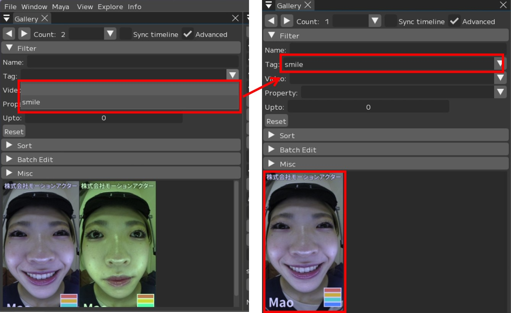
Usage example
With Batch Edit, you can toggle “bulk enable/disable (ON/OFF)” for items currently displayed in the Gallery.
1. In Property, select which item to bulk-set as enabled/disabled (ON/OFF).

2. Check the box to enable, uncheck to disable, and press [Apply].

3. When disabled, the displayed Profiles will be grayed out.
{kind=link}
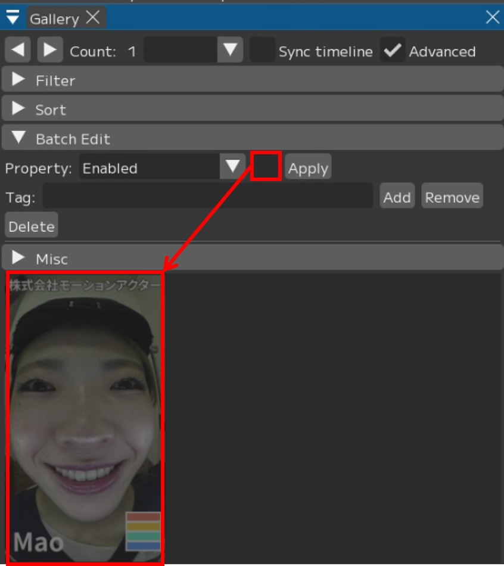
Note
By switching which Profiles are used, you can adjust the output as follows.
1. Narrowing down to specific expressions
By enabling specific tags such as “inverted-V eyebrows” or “anger”, you can prioritize the output and display of targeted expressions.
2. Improving accuracy (removing noise)
By tagging Profiles such as “Profiles with different camera angles” and using the Filter feature to display only Profiles with that tag, you can bulk-set them to “disabled”. This ensures only Profiles optimal for the current environment are applied, improving expression detection accuracy.
Predict Feature
This software includes a Predict feature that automatically retargets based on created Profiles.
After registering a certain number of Profiles, you can use the Predict feature when adding new Profiles.
The software will create predicted expressions based on the already registered Profiles.
Warning
The accuracy of Predict’s automatic retargeting is linked to the accuracy of the registered Profiles.
Also note that it does not analyze the entire video.
1. Move the slider in the VideoTimeline window and stop at the frame where you want to register the expression.
Press [+] to add the image of the specified frame to the Gallery and open the Editor.
Confirm that the image added to the Gallery matches the image in the Editor screen.
|
Added to the Gallery |
Confirm that the image displayed in the Editor screen is the same |
2. Execute Predict – the value numbers will change.

3. The Predict result will appear in Maya.
If adjustments are needed, make them, and once the content is ready to register,
{kind=link}
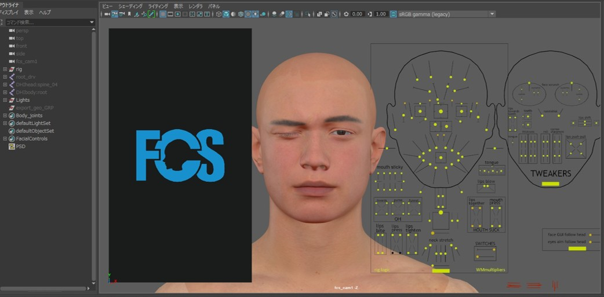
4. Press [Save].

Notes when creating Profiles
About Gaze registration when eyes are closed or half-closed
Warning
When registering expressions where the iris is not visible, such as closed or half-closed eyes, uncheck Gaze.
Otherwise, analysis accuracy may decrease.
Example: When creating a tightly furrowed brow movement
{kind=link}
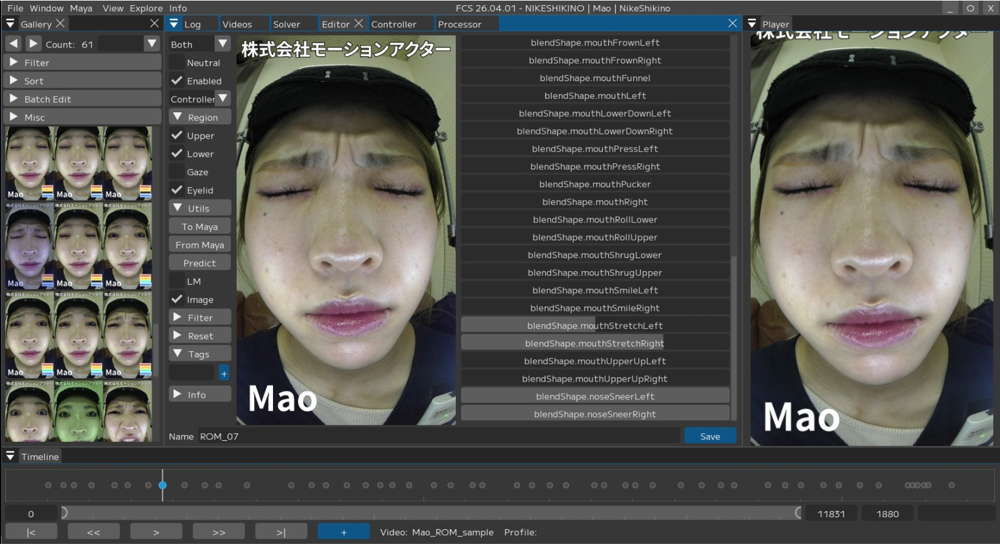
1. After adjusting the expression,
{kind=link}
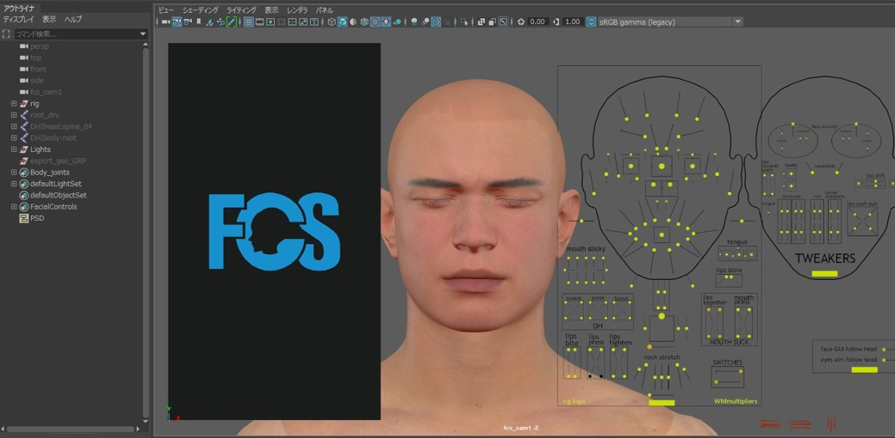
2. Uncheck Gaze in the Region and press [Save].

If the analysis results are not satisfactory
When creating Profiles, make sure to create at least one Profile per video you want to analyze. If no Profile is created, analysis results with insufficient accuracy may be output.
Warning
If at least one Profile has not been created per analysis video, a warning will be displayed during animation output.
{kind=link}
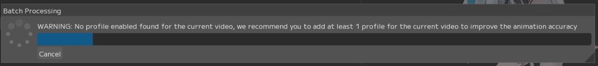
Editing a registered Profile
Click and open the Profile (image) of the expression you want to adjust from the Gallery.
Confirm that the Editor screen displays the same image as the opened Profile.
{kind=link}
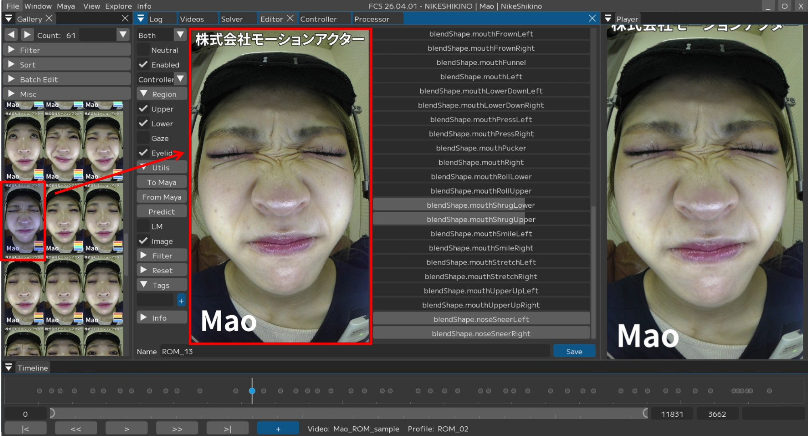
Note
Clicking a Profile in the Gallery will apply the corresponding expression to Maya.
At this time, only the “checked Regions” will be applied.
Unchecked Regions, such as gaze, retain their values from before loading, so
the expression may appear to not be correctly reflected when loading a Profile.
How to check the number of Profiles
To check the number of registered Profiles, refer to “Profiles” in the Videos window.
{kind=link}
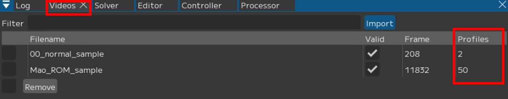
If “Profiles” is not displayed,
Right-click on the top of the menu bar
Check “Profiles” to display it.

Troubleshooting
If pressing [+] does not add a Profile to the Gallery
If pressing [+] does not add a Profile to the Gallery,
the Gallery display window may be too small.
In that case, click the left/right arrows in the Gallery window to display the added Profile.
Click the left/right arrows
{kind=link}
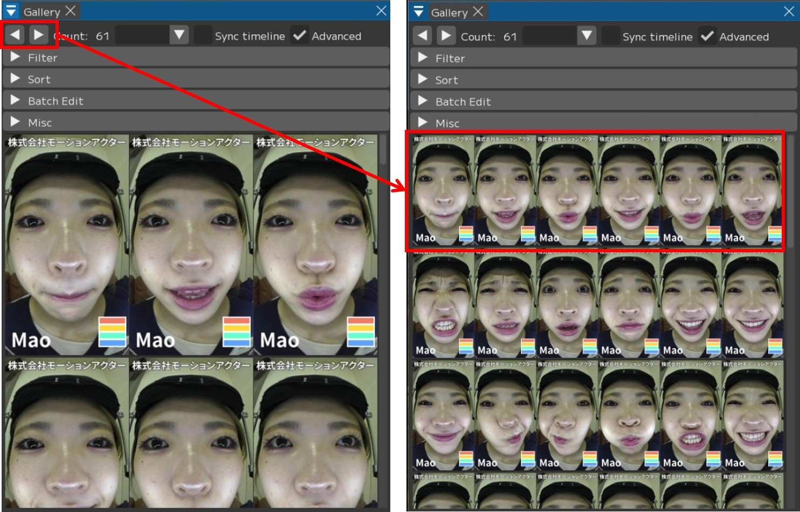
Cannot register a Profile for the same frame
In FCS, duplicate Profiles for the same frame cannot be added.
If a duplicate is attempted, the Log window will display
WARNING:Frame XX already has a Profile associated with it.